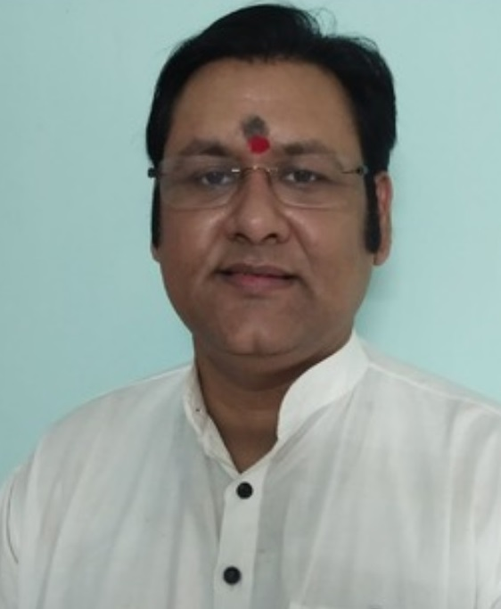
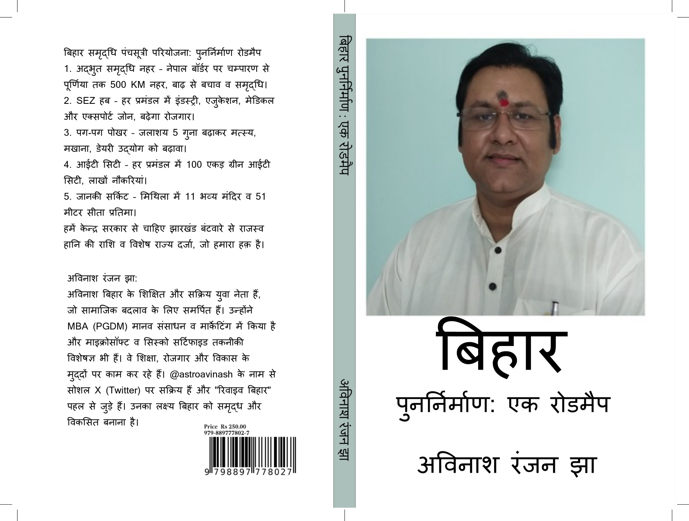

Avinash Jha: Vision for Bihar's Revival
A New Dawn for Bihar: Development through Data, Technology, and Collective Resolve. Exploring solutions for floods, migration, unemployment, and charting a course towards a prosperous future.
Explore the Roadmap रोडमैप देखेंAbout
परिचय
Avinash Ranjan Jha is a dynamic and educated young politician, thinker, and social activist deeply committed to the regeneration of his home state, Bihar, and the broader Ganga-Yamuna region.
Background and Education:
Born in Prayagraj (Allahabad), Uttar Pradesh, and brought up primarily in Bihar, Avinash holds a Post Graduate Diploma in Management (PGDM/MBA) with specializations in HR and Marketing (2001), along with technical certifications like MCSE and CCNA.
Journey into Public Life:
After a successful corporate career (2001-2008), the devastating Kosi flood tragedy in 2008 spurred him to dedicate his life to public service. He founded the "Bihar Revival Forum" to advocate for solutions, notably the "Adbhut Samriddhi Canal" project detailed in his book.
Political Engagements:
With nearly three decades of political involvement (since 1995), Avinash has worked with the Indian National Congress (INC) and the Rashtriya Janata Dal (RJD), holding key state-level positions. He has extensive grassroots experience, conducted in-depth socio-political studies, and contributed to national campaigns.
Core Philosophy:
His work is driven by the philosophy of "Development through data and technology-based politics." He advocates for leveraging modern tools to address Bihar's chronic issues.
Vision for Bihar:
Avinash envisions a holistic revival of Bihar – making it self-reliant, progressive, equitable, prosperous, culturally vibrant, and sustainable.
Beyond politics, he holds an interest in Astrology and Numerology.
अविनाश रंजन झा बिहार और व्यापक गंगा-यमुना क्षेत्र के पुनर्निर्माण के लिए गहराई से प्रतिबद्ध एक गतिशील, शिक्षित युवा राजनेता, विचारक और सामाजिक कार्यकर्ता हैं।
पृष्ठभूमि और शिक्षा:
प्रयागराज (इलाहाबाद), उत्तर प्रदेश में जन्मे और मुख्य रूप से बिहार में पले-बढ़े, अविनाश के पास प्रबंधन में स्नातकोत्तर डिप्लोमा (पीजीडीएम/एमबीए - मानव संसाधन एवं मार्केटिंग, 2001) और तकनीकी प्रमाणपत्र (एमएससीई, सीसीएनए) हैं।
सार्वजनिक जीवन में यात्रा:
एक सफल कॉर्पोरेट करियर (2001-2008) के बाद, 2008 की विनाशकारी कोसी बाढ़ त्रासदी ने उन्हें सार्वजनिक सेवा के लिए प्रेरित किया। उन्होंने समाधानों की वकालत करने के लिए "बिहार रिवाइवल फोरम" की स्थापना की, विशेष रूप से उनकी पुस्तक में विस्तृत "अद्भुत समृद्धि नहर" परियोजना।
राजनीतिक जुड़ाव:
लगभग तीन दशकों की राजनीतिक भागीदारी (1995 से) के साथ, अविनाश ने भारतीय राष्ट्रीय कांग्रेस (INC) और राष्ट्रीय जनता दल (RJD) के साथ प्रमुख राज्य-स्तरीय पदों पर काम किया है। उनके पास व्यापक जमीनी अनुभव है, उन्होंने गहन सामाजिक-राजनीतिक अध्ययन किए हैं, और राष्ट्रीय अभियानों में योगदान दिया है।
मूल दर्शन:
उनका कार्य "डेटा और प्रौद्योगिकी आधारित राजनीति के माध्यम से विकास" के दर्शन से प्रेरित है। वह बिहार की पुरानी समस्याओं के समाधान के लिए आधुनिक उपकरणों का लाभ उठाने की वकालत करते हैं।
बिहार के लिए दृष्टि:
अविनाश बिहार के एक समग्र पुनर्निर्माण की कल्पना करते हैं - इसे आत्मनिर्भर, प्रगतिशील, न्यायसंगत, समृद्ध, सांस्कृतिक रूप से जीवंत और टिकाऊ बनाना, जिसमें शिक्षा, रोजगार, बुनियादी ढांचे, सुशासन और सामाजिक न्याय पर ध्यान केंद्रित किया गया हो।
राजनीति से परे, उन्हें ज्योतिष और अंकशास्त्र में भी रुचि है।
The Book - Bihar Revival: A Roadmap
पुस्तक - बिहार पुनर्निर्माण: एक रोडमैप
"Bihar Revival: A Roadmap" by Avinash Ranjan Jha is more than an analysis; it's a comprehensive blueprint for action for the state's holistic regeneration. It confronts Bihar's harsh realities and offers bold, integrated, and actionable solutions.
Key Highlights:
- In-depth Analysis: Data-driven exploration of Bihar's challenges (Parts 1-4).
- Ideological Foundation: Relevance of Gandhism, Socialism, Lohia-JP's revolutionary spirit (Part 3).
- The Panchasutri Solution (Part 5): Details the ambitious 5-Point Prosperity Plan:
- Adbhut Samriddhi Canal
- Special Economic Zones (SEZs)
- Pag-Pag Pokhar Machh Makhan
- IT City (Hub & Spoke Model)
- Janaki Spiritual Circuit
- Implementation & Future Vision (Part 6 & Supplement): Focuses on enablers like sustainable energy, good governance, digital leapfrogging, economic diversification, strategic investor outreach, and addressing systemic issues.
Essential reading for policymakers, the diaspora, investors, students, activists, and anyone invested in Bihar's future. It's a call to action, a blueprint for hope.
"बिहार पुनर्निर्माण: एक रोडमैप" अविनाश रंजन झा द्वारा रचित, केवल एक विश्लेषण नहीं है; यह राज्य के समग्र पुनर्निर्माण के लिए एक व्यापक कार्य योजना है। यह बिहार की कठोर वास्तविकताओं का सामना करती है और साहसिक, एकीकृत और कार्रवाई योग्य समाधान प्रदान करती है।
मुख्य विशेषताएं:
- गहन विश्लेषण: बिहार की चुनौतियों का डेटा-संचालित अन्वेषण (भाग 1-4)।
- वैचारिक आधार: गांधीवाद, समाजवाद, लोहिया-जेपी की क्रांतिकारी भावना की प्रासंगिकता (भाग 3)।
- पंचसूत्री समाधान (भाग 5): महत्वाकांक्षी 5-सूत्री समृद्धि योजना का विवरण:
- अद्भुत समृद्धि नहर
- विशेष आर्थिक क्षेत्र (SEZs)
- पग-पग पोखर माछ मखान
- आईटी सिटी (हब और स्पोक मॉडल)
- जानकी आध्यात्मिक सर्किट
- कार्यान्वयन और भविष्य की दृष्टि (भाग 6 और पूरक): सतत ऊर्जा, सुशासन, डिजिटल छलांग, आर्थिक विविधीकरण, रणनीतिक निवेशक आउटरीच और प्रणालीगत मुद्दों को संबोधित करने जैसे समर्थकों पर ध्यान केंद्रित करना।
नीति निर्माताओं, प्रवासी भारतीयों, निवेशकों, छात्रों, कार्यकर्ताओं और बिहार के भविष्य में रुचि रखने वाले किसी भी व्यक्ति के लिए आवश्यक पठन। यह कार्रवाई का आह्वान है, आशा की एक किरण है।
Vision & Roadmap for Bihar's Revival
बिहार पुनर्निर्माण के लिए दृष्टि और रोडमैप
The vision is for a holistically regenerated Bihar – prosperous, equitable, educated, healthy, sustainable, culturally vibrant, well-governed, and globally connected. The roadmap is an integrated strategy combining large-scale projects with systemic reforms and innovative ideas.
I. Mithila Samriddhi Panchasutri Pariyojana (5-Point Plan):
- Adbhut Samriddhi Canal: 500 km canal for permanent flood control, massive irrigation, hydropower, inland navigation.
- Special Economic Zones (SEZs): In all 9 divisions for balanced industrial growth and jobs.
- Pag-Pag Pokhar Machh Makhan: Reviving traditional water bodies for rural prosperity (fisheries, Makhana).
- IT City (Hub & Spoke): World-class green IT hub + Satellite IT Parks across Bihar for global opportunities.
- Janaki Spiritual Circuit: Leveraging cultural heritage for tourism.
II. Foundational Enablers & Systemic Reforms:
- Sustainable Energy & Environment: Massive Solar Mission, renewable diversification, rainwater harvesting, environmental management.
- Good Governance & Anti-Corruption: Transparency, E-governance, strict penalties, protection for honest officials.
- Digital Leapfrogging (Education & Health): Modernized universities (IT, GenAI, Open Source, Foreign Languages), Digital Learning Platform for all schools, Statewide Telemedicine Network.
- Economic Diversification & Global Linkages: 'Farm-to-Kitchen', E-commerce Empowerment, 'Twin Cities' program, Direct Agri-Exports, Strategic Investor Outreach.
- Addressing Sensitive Issues: Electoral Integrity, Regional Aspirations.
III. Implementation Strategy:
- Bihar Revival Forum/Authority: For coordination and monitoring.
- Political Will & Consensus: Sustained commitment.
- Efficient Bureaucracy: Accountable administration.
- Funding: Mobilizing resources (Central/State/Intl./PPP/Special Status).
- Jan Bhagidari: People's movement.
This integrated approach aims to transform Bihar by 2035-2045.
दृष्टि एक समग्र रूप से पुनर्जीवित बिहार की है - समृद्ध, न्यायसंगत, शिक्षित, स्वस्थ, टिकाऊ, सांस्कृतिक रूप से जीवंत, सुशासित और विश्व स्तर पर जुड़ा हुआ। रोडमैप एक एकीकृत रणनीति है जो बड़े पैमाने की परियोजनाओं को प्रणालीगत सुधारों और अभिनव विचारों के साथ जोड़ती है।
I. मिथिला समृद्धि पंचसूत्री परियोजना (5-सूत्री योजना):
- अद्भुत समृद्धि नहर: स्थायी बाढ़ नियंत्रण, व्यापक सिंचाई, जल विद्युत, अंतर्देशीय नौवहन के लिए 500 किमी नहर।
- विशेष आर्थिक क्षेत्र (SEZs): संतुलित औद्योगिक विकास और लाखों नौकरियों के लिए सभी 9 प्रमंडलों में।
- पग-पग पोखर माछ मखान: ग्रामीण समृद्धि (मत्स्य पालन, मखाना) के लिए पारंपरिक जल निकायों का पुनरुद्धार।
- आईटी सिटी (हब और स्पोक): वैश्विक अवसरों के लिए विश्व स्तरीय हरित आईटी हब + पूरे बिहार में सैटेलाइट आईटी पार्क।
- जानकी आध्यात्मिक सर्किट: पर्यटन के लिए सांस्कृतिक विरासत का लाभ उठाना।
II. मूलभूत समर्थक और प्रणालीगत सुधार:
- सतत ऊर्जा और पर्यावरण: विशाल सौर मिशन, नवीकरणीय विविधीकरण, वर्षा जल संचयन, पर्यावरण प्रबंधन।
- सुशासन और भ्रष्टाचार उन्मूलन: पारदर्शिता, ई-गवर्नेंस, सख्त दंड, ईमानदार अधिकारियों का संरक्षण।
- डिजिटल छलांग (शिक्षा और स्वास्थ्य): आधुनिकीकृत विश्वविद्यालय (आईटी, जेनएआई, ओपन सोर्स, विदेशी भाषाएँ), सभी स्कूलों के लिए डिजिटल लर्निंग प्लेटफॉर्म, राज्यव्यापी टेलीमेडिसिन नेटवर्क।
- आर्थिक विविधीकरण और वैश्विक जुड़ाव: 'फार्म-टू-किचन', ई-कॉमर्स सशक्तिकरण, 'ट्विन सिटीज' कार्यक्रम, प्रत्यक्ष कृषि-निर्यात, रणनीतिक निवेशक आउटरीच।
- संवेदनशील मुद्दों का समाधान: चुनावी अखंडता, क्षेत्रीय आकांक्षाएं।
III. कार्यान्वयन रणनीति:
- बिहार रिवाइवल फोरम/प्राधिकरण: समन्वय और निगरानी के लिए।
- राजनीतिक इच्छाशक्ति और सहमति: निरंतर प्रतिबद्धता।
- कुशल नौकरशाही: जवाबदेह प्रशासन।
- वित्तपोषण: संसाधन जुटाना (केंद्र/राज्य/अंतर्राष्ट्रीय/पीपीपी/विशेष दर्जा)।
- जन भागीदारी: जन आंदोलन।
यह एकीकृत दृष्टिकोण 2035-2045 तक बिहार को बदलने का लक्ष्य रखता है।
Contact
संपर्क करें
Your thoughts, suggestions, and participation are crucial for Bihar's revival. Please use the form below to send your message directly to Avinash Jha.
बिहार के पुनर्निर्माण के लिए आपके विचार, सुझाव और भागीदारी महत्वपूर्ण हैं। कृपया अपना संदेश सीधे अविनाश झा तक भेजने के लिए नीचे दिए गए फॉर्म का उपयोग करें।